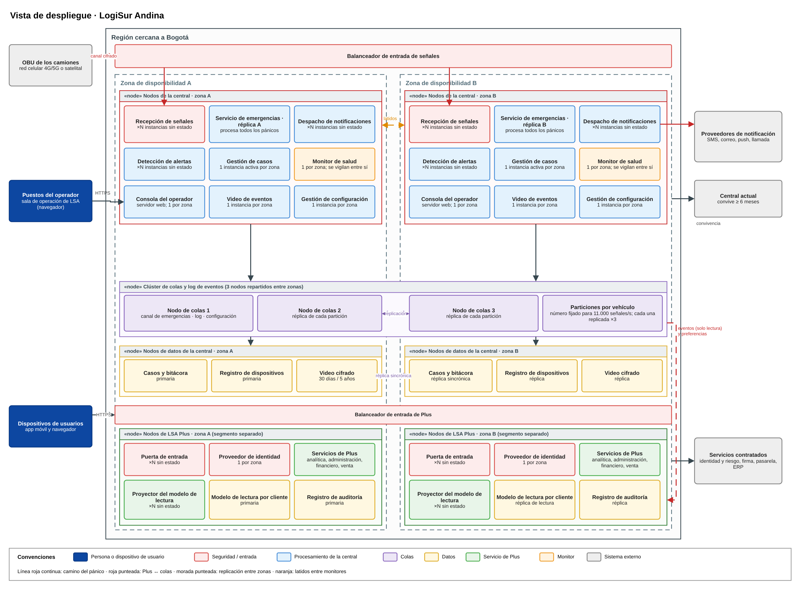

Qué pasa hoy y cuáles ASR definen el diseño
LSA tiene tres frentes (Central de emergencias, Venta en línea y LSA Plus), pero una falla en Plus no puede tocar la central

En el último paro nacional un pánico tardó 4 minutos en llegar al operador. La meta es menos de 2 segundos.
| ASR crítico | Situación | Meta | Qué nos obliga a decidir |
|---|---|---|---|
| DIS-1 | Cae un servidor en plena ráfaga de pánicos | ≥ 99,99 % guardados (< 2 s) | Réplicas activas (RF=3), acuse tras replicar y monitor de latidos |
| LAT-1 | Pico de 5.000 señales/s | Guardar en p99 < 1 min · 0 pérdidas | Receptores sin estado y un carril exclusivo para el pánico |
| LAT-2 | Pico sostenido 5 minutos | Detectar en p99 < 5 s · 0 desorden | 24 colas por hash del camión, con un worker por cola |
| ESC-2 | La flota pasa de 18.000 a 40.000 camiones | ≈ 11.000/s sin cambiar código | Fijar las 24 particiones desde el inicio y escalar nodos |
Vista funcional y concurrencia
El acuse al camión se envía solo después de replicar; la detección de anomalías corre en paralelo en 24 pipelines

Vista funcional de la ruta crítica (clic para ampliar)

Vista de concurrencia: 3 receptores, 2 despachadores y 24 colas independientes
Despliegue: dos zonas locales y respaldo en tres países
Operación activa en dos zonas cercanas a Bogotá y failover hacia Ecuador y Perú si falla la región principal

Despliegue regional en Zona A y Zona B, con réplica sincrónica para casos y segmento aparte para Plus

Respaldo multi-región (Colombia primaria; Ecuador y Perú como réplicas activas)
24 colas absorben el pico; una sola se atrasa (EXP-2 y EXP-3)
Guardar no es el cuello de botella (ambas cumplen EXP-2). El problema de la cola única aparece al procesar las reglas
Evolución de la cola pendiente (0 s a 600 s · pico de 5.000/s entre 30 s y 330 s)
Tiempo
0 s
Cola con táctica (24 colas)
0
p99 = 0,749 s · vuelve a lo normal en ≤ 1,4 s
Cola línea base (1 cola)
0
p99 > 832,8 s · acumula ~2,05 M y no recupera

¿Alcanza para 40.000 camiones? (EXP-4 y ESC-2)
Mueve el control para ver cuánta carga recibe cada una de las 24 colas y revisa el reparto real medido por partición
Flota proyectada: 40.000 camiones
Reparto real en las 24 particiones (pasa el cursor sobre cada barra)
Pasa el mouse sobre una partición (P0–P23) para ver cuántas señales recibió y su desviación frente al promedio.